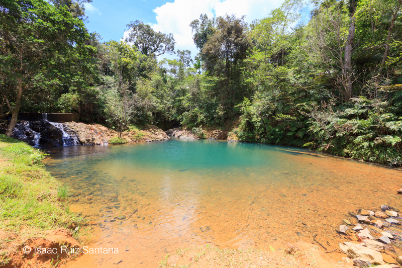
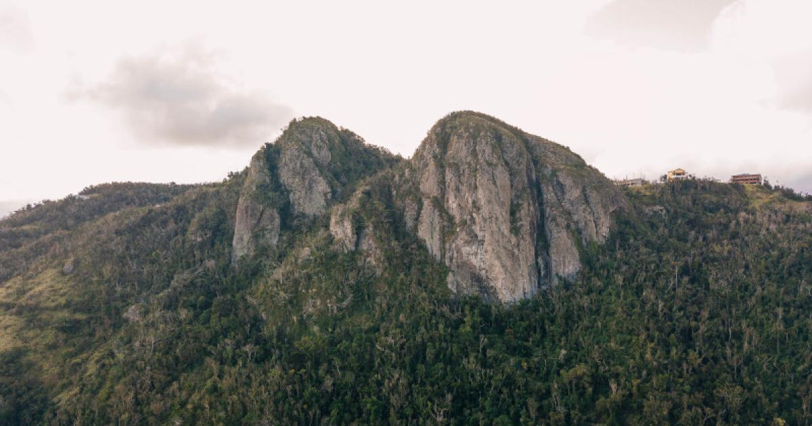
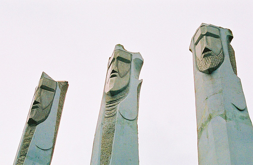

Bosque Carite
Este bosque estatal se extiende por cinco municipios de la región sureste de la isla. Uno de los lugares más populares del bosque es el pozo de natación Charco Azul, al que se puede llegar después de una corta caminata de 20 minutos por el bosque.
Pueden visitar el Bosque Carite en:
- Dirección: 3WWQ+5GV, Guayama
Cerro Las Tetas
Las Piedras del Collado es un pico montañoso que se encuentra entre los municipios de Salinas y Cayey. También conocida por los lugareños como Las Tetas de Cayey, esta reserva natural designada se encuentra a casi 2,800 pies sobre el nivel del mar y alberga un bosque pintoresco. Una variedad de compañías de turismo locales ofrecen escalada en roca, caminatas e incluso excursiones de campamento al sitio.
Pueden visitar el Cerro las Tetas en:
- Dirección: 3QVF+FG2, Aibonito, Salinas 00705
Museo Dr. Pío López Martínez

El Museo de Arte Dr. Pío López Martínez es un centro de estudio, conservación, creación y difusión de las artes a partir del legado artístico de Ramón Frade, así como de la colección del cartel serigráfico y la gráfica puertorriqueña. El Legado Frade, que custodia el Museo desde el 1979, se compone de una diversidad de obras de arte y objetos producidos por el artista así como de sus pertenencias procedentes de su domicilio en Cayey.
El Legado incluye pintura, dibujo; fotografía; planos y dibujos de agrimensura, ingeniería, arquitectura y diseño, así como documentos, libros, herramientas, muebles y memorabilia del artista.
El Museo abrió al público el 11 de junio de 1979 con la exhibición de las pertenencias de Ramón Frade. El Legado fue donado a la Universidad de Puerto Rico en el año 1957 por la viuda del pintor Doña Reparada Ortiz
Pueden visitar el Museo Dr. Pío López Martínez en:
- Dirección:4R8P+CW8, Avenida Universidad, Cayey, 00736
- Website: cayey.upr.edu
- Número telefónico: (787)-738-2161
La loma de los Reyes
En una loma de la Sierra de Cayey se encuentran tres estatuas en honor a los Tres Santos Reyes. La monumental obra, construida en piedra y tallada por el escultor más reconocido de la Isla, Juan Santos Torres apodado como “El Pica Piedras de Guavate”, se observa desde el expreso PR-52.
Pueden visitar La loma de los reyes en:
- Dirección: 4WX2+64Q, Y, Beatriz